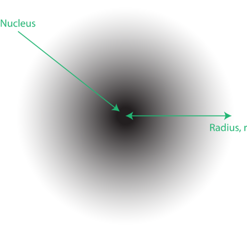
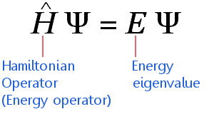

According to this theory of wave mechanics, electrons do not move about an atom in a definite path. It is impossible to determine the exact location of an electron(Heisenberg uncertainty principle). The probable location of an electron is based on how much energy the electron has. According to the modern atomic model, an atom has a small positively charged nucleus surrunded by a large region in which there are enough electron to make an atom neutral.
 